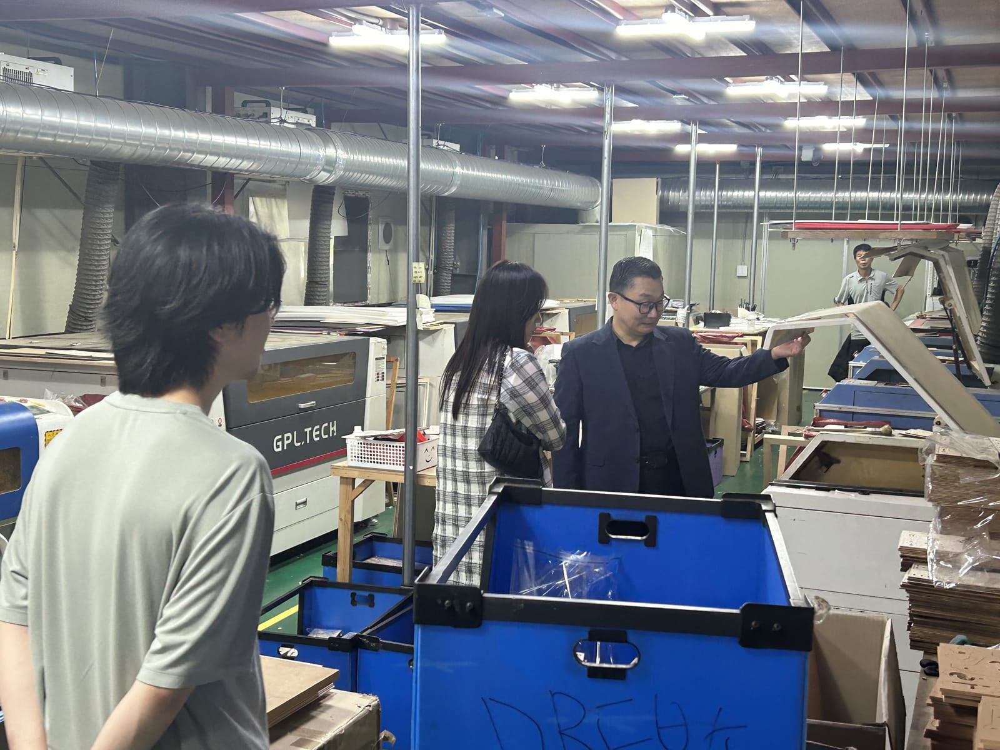
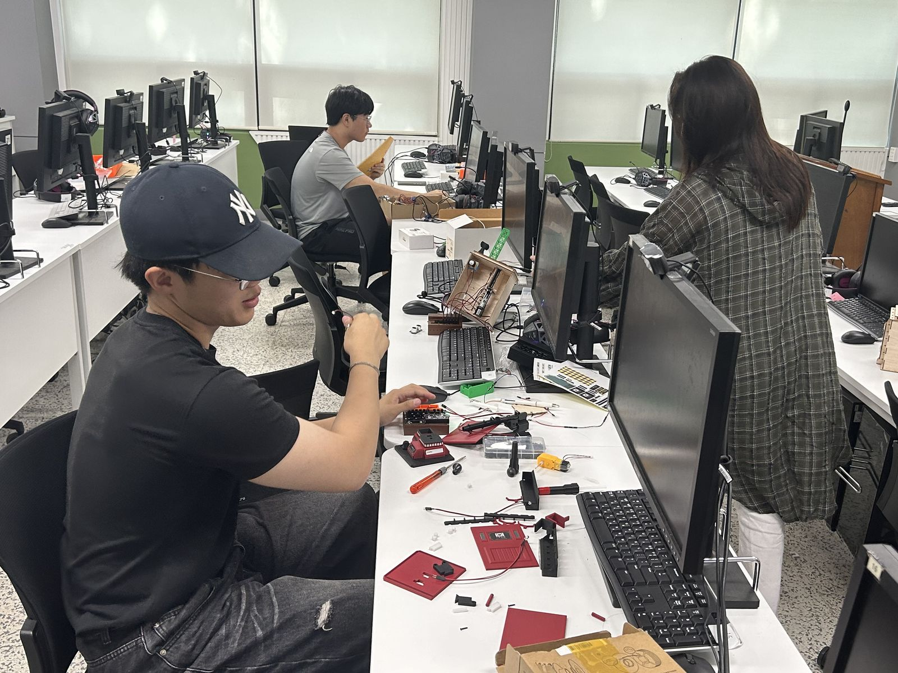
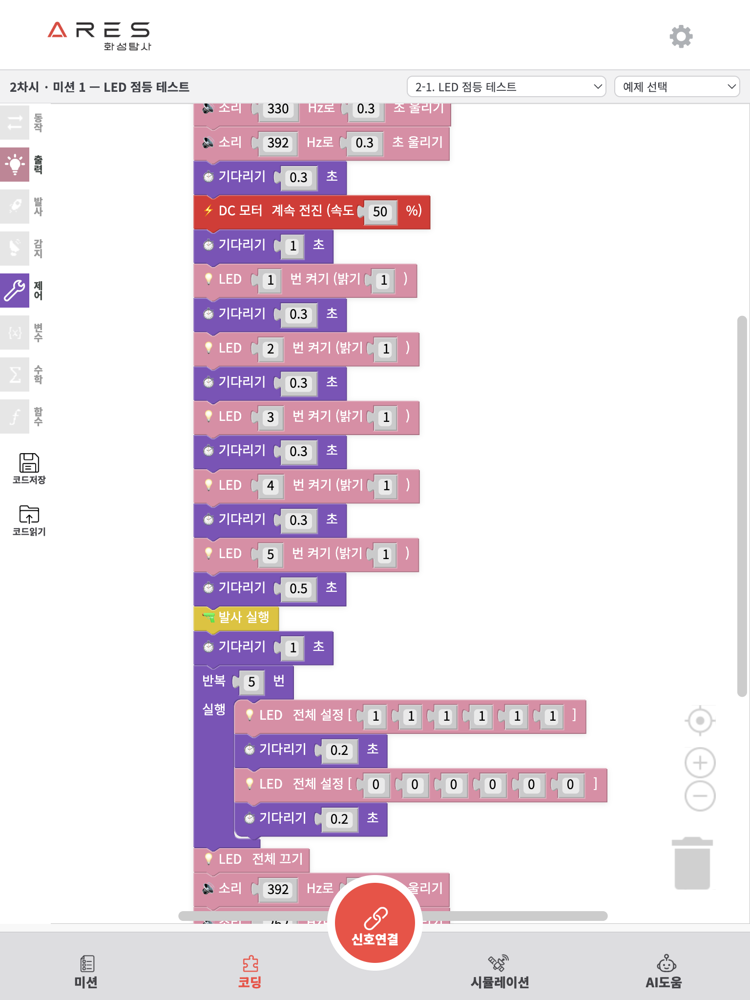
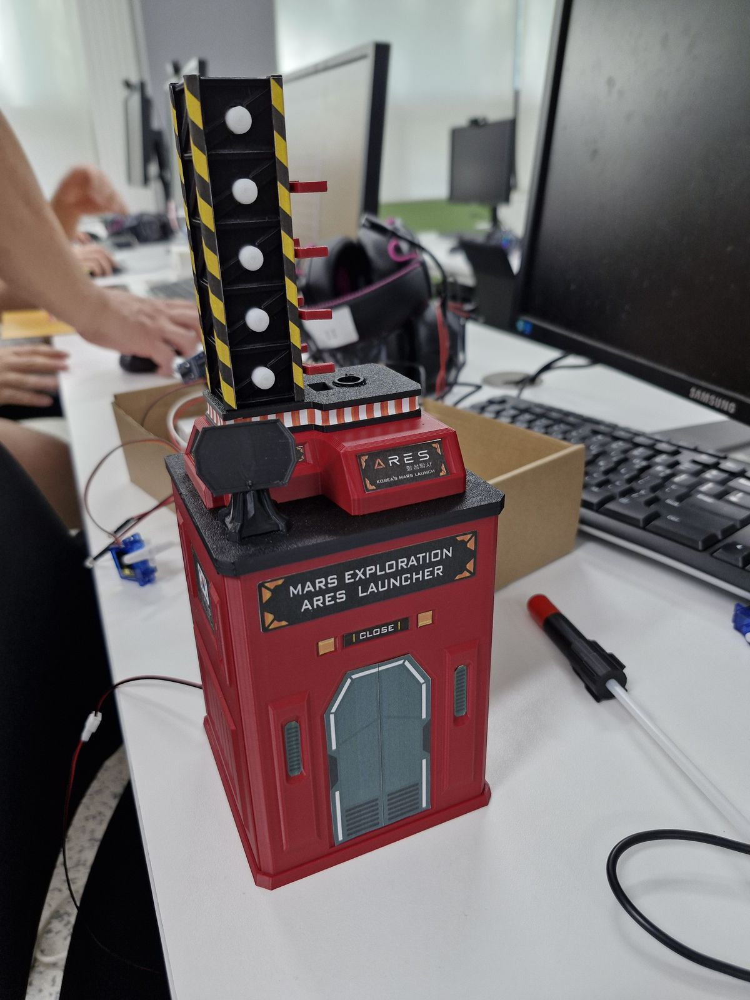

패널 원고 작성 양식
| 구분 | 내용 |
|---|---|
| 5극 3특(반드시 택1★) |
□ 수도권 ■ 동남권 □ 대경권 □ 중부권 □ 호남권 □ 제주특별자치도 □ 강원특별자치도 □ 전북특별자치도 |
| 앵커 4대 성과목표(앵커 사업단 택1) |
□ 지역정주형 인재양성 ■ 지산학연 협력 생태계 구축 □ 직업 평생교육의 혁신 □ 지역현안 해결 |
| 특성화 지방대학(특성화 지방대학 선택) | □ 특성화 지방대학(글로컬) |
| 우수성과명 |
블록코딩 화성탐사 로버 ARES
— 17자(띄어쓰기 포함), 양식 제한 충족 —
|
| 우수성과 소개 |
1) 개발배경 — 좋은 교구는 있지만, 좋은 소프트웨어가 없었다
📎 별첨 ARES_개발배경_1 — 코리아사이언스 생산 공장 견학·부품 공정 사진
 2) 개발과정 — 대학과 기업이 한 팀으로, 3주 집중 제품개발학기
📎 별첨 ARES_개발과정_1~3 — 컴퓨터실 공동개발 전경 · 교구 시제품 팀 조립 · 통합 점검 현장
   3) 성과소개 — 브라우저만 열면 시작되는 화성 탐사
📎 별첨 ARES_성과소개_1~4 — 서비스 미션 화면 · 3D 시뮬레이터(발사대_제작 씬) · 화성발사대 시제품 · 진입 컷씬
    4) 기대효과 — 지역 기업의 디지털 전환, 교실의 문턱 제거
|
| 관련 소스이미지·사진 자료 |
첨부 세트 구성 완료 — Document/Expo/첨부이미지/ (파일명 규칙 ARES_항목_번호 적용, 8장)※ 현재 세트는 웹 변환본(1600px, 장당 0.1~0.3MB)입니다. 양식 요구(2MB 이상 원본)에 맞추려면 제출 전 원본 사진(원본 일차 폴더 보관 기기)으로 교체하고, 화면 캡처(성과소개_1·2·4)는 고해상도로 재캡처하세요. |